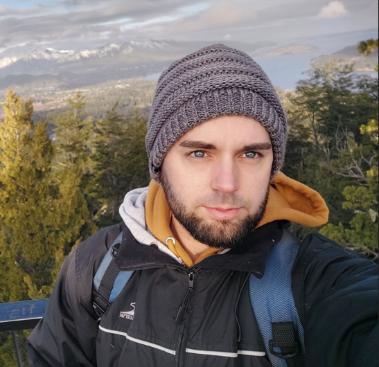

<div class="contenedor sombra">

    <div class="sobremi mi-seccion">

        <h1 id="sobremi ">Sobre mí</h1>

        <div class="foto">
            
        </div>

        <section>
            <h2>¡Hola!</h2>
            <p>
                Soy un apasionado por la programación y estudiante de Desarrollo Web Full Stack en Argentina
                Programa. Me encanta aprender nuevas habilidades y tecnologías para mejorar en mi carrera profesional.
                Estoy enfocado en crear proyectos utilizando tecnologías como HTML, CSS, JavaScript y Typescript, junto
                con frameworks como Angular. También utilizo Git y Github para colaborar con otros desarrolladores y
                seguir aprendiendo de ellos.<br>
                Me interesa mucho trabajar con metodologías ágiles como Scrum. Además, tengo habilidades blandas como la
                comunicación, liderazgo y trabajo en equipo, que me han permitido llevar mis proyectos de desarrollo web
                a un nivel superior. <br>
                En mi tiempo libre, disfruto de viajar, conocer nuevos lugares y pasar tiempo con mi familia y amigos.
                Considero que el aprendizaje continuo es clave en mi carrera profesional y siempre estoy buscando
                mejorar mis habilidades y conocimientos para trabajar en equipo y lograr los objetivos con enfoque en la
                calidad.
            </p>
        </section>

    </div><!--Sobre mi-->
</div><!--contenedor sombra-->